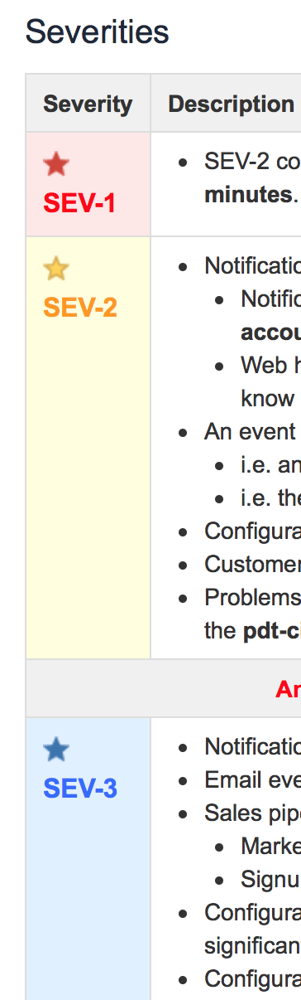
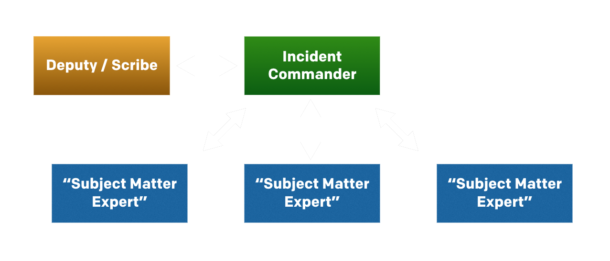

Incidents & Accidents
Matt Stratton
DevOps Evangelist, PagerDuty
Gratuitous slide of kids to get you on my side
Disclaimer, part the first:
Learn from other industries,
do not take on their stresses.
Disclaimer, part the second:
This is a topic with a surprisingly
large number of details.
Before, during, after
Have criteria defined for when to have and not have a call.

Monitor the business criteria,
and act accordingly.
People are expensive.
Practice still makes perfect.
“Know your role”

Have a clear understanding
of who is supposed to be
involved in each role.
During
The IC becomes the highest authority.
Yes, even higher than the CEO
The IC manages the
flow of conversation.
“Can someone…”
Humor is best in context.
DT5: Roger that
GND: Delta Tug 5, you can go right on bravo
DT5: Right on bravo, taxi.
(…): Testing, testing. 1-2-3-4.
GND: Well, you can count to 4. It’s a step in the right direction. Find another frequency to test on now.
(…): Sorry